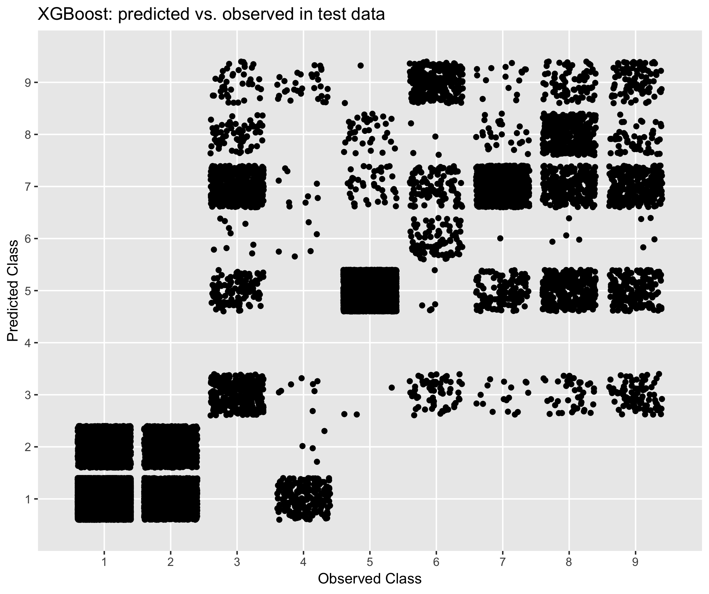
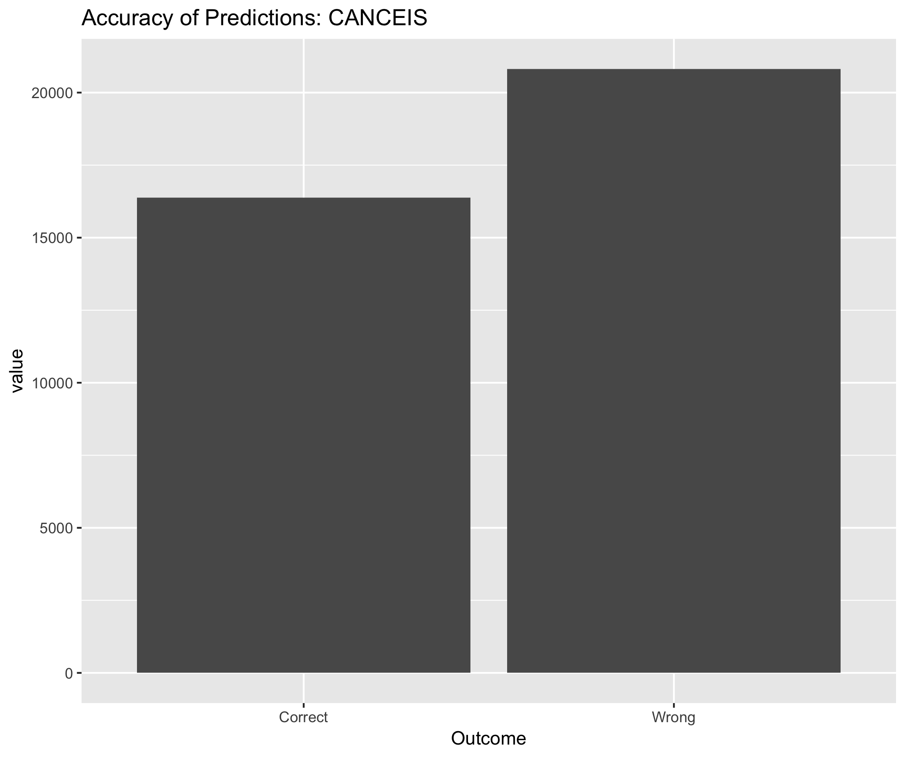
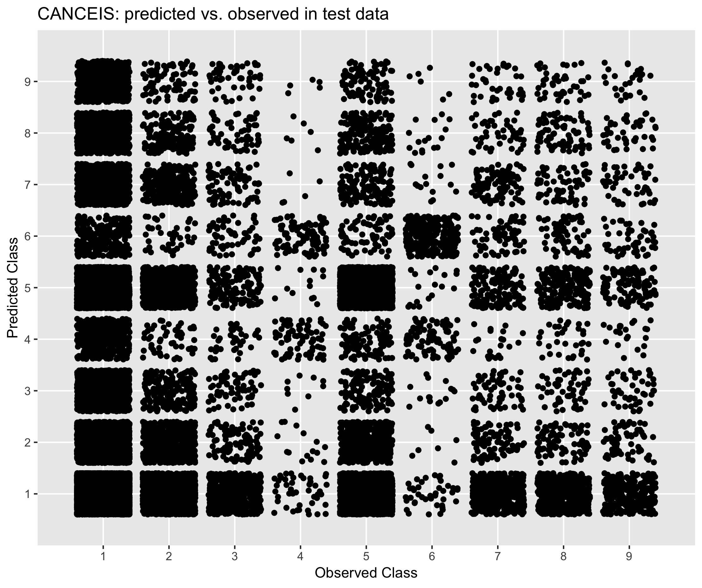

Royal Statistics Society 2019
Learning to Impute
Treating missing data with machine learning
Data Preparation
Model Building
Economic Activity
Model performance
| XGBoost | CANCEIS | MixedMethods | Mode | |
|---|---|---|---|---|
| Accuracy | 0.78 | 0.44 | 0.26 | 0.47 |
| Kappa | 0.61 | 0.14 | 0.06 | NA |
XGBoost: Overall Accuracy

XGBoost: Confusion Matrix
XGBoost: Imputable Variable Distribution

CANCEIS: Overall Accuracy
CANCEIS: Confusion Matrix
CANCEIS: Imputable Variable Distribution

Productionising models
Stay posted
Working document
We are continuing to review alternative imputation methods. We've got some links in the next slide down if you'd like stay posted

Get in touch
hint! click me ;)